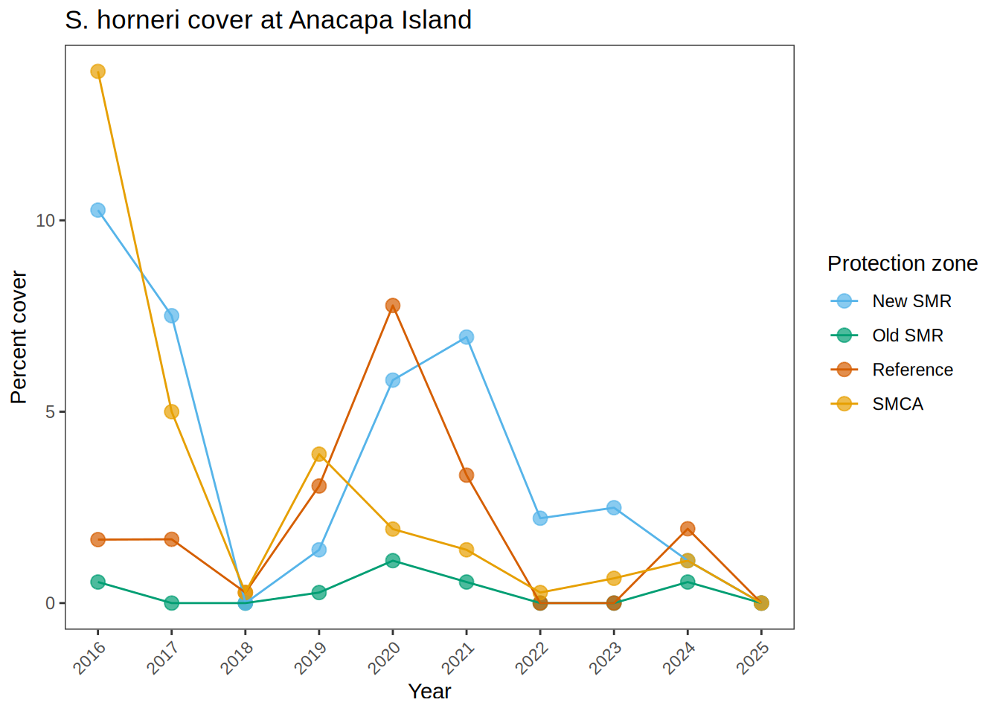
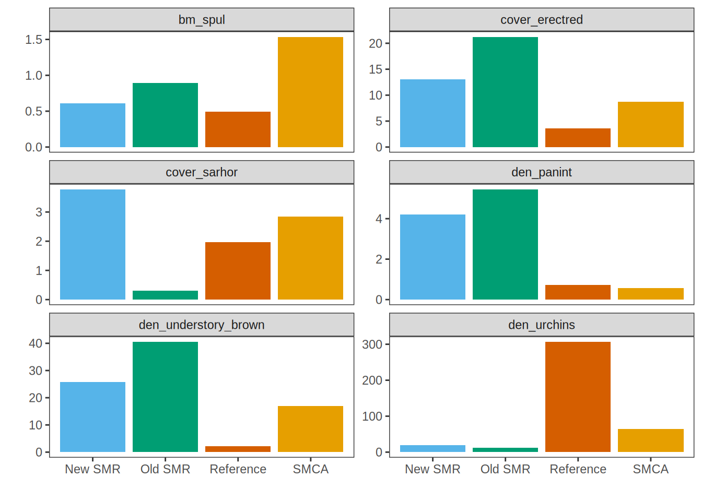
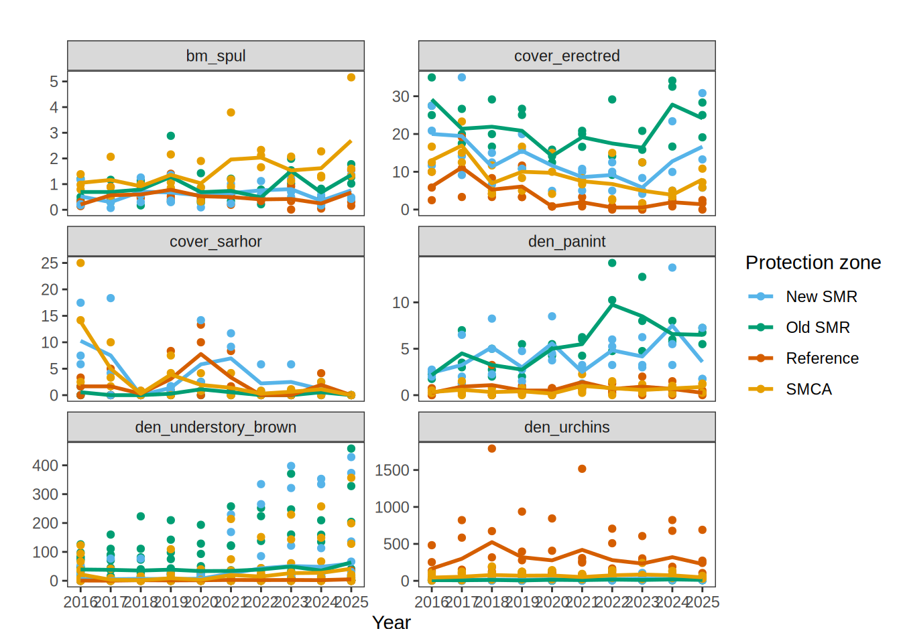

Invasions by non-native species negatively alter the structure and function of marine ecosystems and are predicted to increase with climate change. The non-native Asian brown algae Sargassum horneri (“devil weed”) has invaded Southern California rocky reef habitats since its introduction in 2003. California’s extensive Marine Protected Area (MPA) network provides a unique oportunity to study the cascading effects of different marine management strategies on invasion.
In the 2017 study “Marine Management Affects the Invasion Success of a Non-Native Species in a Temperate Reef System in California, USA.”, Caselle et al. found that the biological mechanisms leading to S. horneri resistance varied with MPA age and protection level. In an old MPA, competition with abundant native algae suppressed S. horneri. In a fished urchin barren, herbivory by urchins suppressed S. horneri. In a recently established MPA, neither competitive pressure nor grazing pressure were strong enough to suppress S. horneri.
Building off of the 2017 Caselle et al. study, my analysis examines how the community within the new MPA developed. Did S. horneri hinder the ability of the benthic community to develop into a healthy state? Or were native species eventually able to suppress S. horneri?
Research question: How do different levels of marine management affect the invasion success of Sargassum horneri at Anacapa Island?
Established in 1999, PISCO is a collaborative longterm monitoring program along the US West Coast. Kelp forest monitoring data is collected with SCUBA diver surveys on the density and abundance of macroalgae, invertebrates, and fishes. These data inform important ocean management and policy decisions, such as MPA design.
S. horneri and native fleshy red algae percent cover were quantified with a uniform point contact (UPC) method, done at every meter along 30 x 2 m band transects. Native understory brown algae, urchin, and CA spiny lobster densities were quantified on the same 30 x 2 m band transect surveys. CA sheephead were counted and sized on seperate 30 × 2 × 2 m band transects at bottom and midwater depths.
Statistical model methods
INSERT DAG HERE!!!
Protection zone affects urchin predators density by determining if they are fished or not
Urchin predator density affect urchin density through consumption
Urchin density affects native understory brown algae density through grazing
Urchin density affects native red algae percent cover through grazing
Urchin density directly affects S. horneri percent cover through grazing
Native understory brown algae density affects S. horneri percent cover through competition
Native red algae percent cover affects S. horneri percent cover through competition
(Confounder) Environmental/habitat characteristics may affect all species densities and percent cover
The variables from the DAG that are included in the data are: Protection zone, urchin predator density, urchin density, native understory brown algae density, native red algae percent cover, and S. horneri percent cover.
The variables from the DAG that are not included in the data are: Environmental/habitat charachteristics. There are some exeptions, such as depth of transect.
The missing variables may bias the results if there a significant environmental/habitat changes went undetected during the study period (e.g., A large die off of urchins from a disease outbreak)
Model:Sargassum horneri density = ….
Predictor variables
Categorical: Protection zone
Continuous: Native red algae percent cover, native understory brown algae density, urchin density, CA spiny lobster density, CA sheephead biomass
Response variable
Sargassum horneri percent cover is continuous and bound from 0 to 100 percent
Hypothesis
H0 - NEEDS UPDATE (There is no statistically significant difference between the different protection zones for these variables: S. horneri percent cover, urchin predator density, urchin density, native understory brown algae density, and native red algae percent cover)
HA - NEEDS UPDATE (There is a statistically significant difference between the different protection zones for these variables: S. horneri percent cover, urchin predator density, urchin density, native understory brown algae density, and native red algae percent cover)
Statistical model results
Model estimates are presented with appropriate uncertainty
library(tidyverse)
── Attaching core tidyverse packages ──────────────────────── tidyverse 2.0.0 ──
✔ dplyr 1.2.1 ✔ readr 2.2.0
✔ forcats 1.0.1 ✔ stringr 1.6.0
✔ ggplot2 4.0.3 ✔ tibble 3.3.1
✔ lubridate 1.9.5 ✔ tidyr 1.3.2
✔ purrr 1.2.2
── Conflicts ────────────────────────────────────────── tidyverse_conflicts() ──
✖ dplyr::filter() masks stats::filter()
✖ dplyr::lag() masks stats::lag()
ℹ Use the conflicted package (<http://conflicted.r-lib.org/>) to force all conflicts to become errors
Rows: 1440 Columns: 5
── Column specification ────────────────────────────────────────────────────────
Delimiter: ","
chr (3): site, protection_zone, species
dbl (2): survey_year, value
ℹ Use `spec()` to retrieve the full column specification for this data.
ℹ Specify the column types or set `show_col_types = FALSE` to quiet this message.
Rows: 40 Columns: 8
── Column specification ────────────────────────────────────────────────────────
Delimiter: ","
chr (1): protection_zone
dbl (7): survey_year, bm_spul, den_understory_brown, den_urchins, den_panint...
ℹ Use `spec()` to retrieve the full column specification for this data.
ℹ Specify the column types or set `show_col_types = FALSE` to quiet this message.
zone_mean <-read_csv("output/zone_mean.csv")
Rows: 24 Columns: 3
── Column specification ────────────────────────────────────────────────────────
Delimiter: ","
chr (2): species, protection_zone
dbl (1): mean
ℹ Use `spec()` to retrieve the full column specification for this data.
ℹ Specify the column types or set `show_col_types = FALSE` to quiet this message.
# Figure 1: mean S. horneri percent cover over time for each protection zonesyear_zone_mean |>ggplot(mapping =aes(x = survey_year,y = cover_sarhor,color = protection_zone ) ) +geom_point(alpha =0.7,size =3 ) +geom_line() +scale_colour_manual(values =c("New SMR"="#56B4E9","Old SMR"="#009E73","Reference"="#D55E00","SMCA"="#E69F00" ) ) +scale_x_continuous(breaks =2016:2025) +labs(title ="S. horneri cover at Anacapa Island",x ="Year",y ="Percent cover",color ="Protection zone" ) +theme_bw() +theme(panel.background =element_blank(), # Remove grey spacepanel.grid.major =element_blank(), # Remove linespanel.grid.minor =element_blank(), # Remove linesaxis.text.x =element_text(angle =45, hjust =1) # Angle years )

# NEEDS ERROR BARS# Figure 2: means and standard errors of species biomass, density, percent cover across sites within different protection zoneszone_mean |>ggplot(mapping =aes(x = protection_zone,y = mean,fill = protection_zone ) ) +geom_col(position ="dodge2") +#geom_errorbar(aes(ymin = lower, ymax = upper), position_dodge2(width = 0.5, padding = 0.5)) +scale_fill_manual(values =c("New SMR"="#56B4E9","Old SMR"="#009E73","Reference"="#D55E00","SMCA"="#E69F00" ) ) +labs(x ="",y ="" ) +theme_bw() +theme(panel.background =element_blank(), # Remove grey spacepanel.grid.major =element_blank(), # Remove linespanel.grid.minor =element_blank(), # Remove lineslegend.position ="none"# Remove legend ) +facet_wrap(~species, ncol =2, scales ="free_y")

# Figure 3: boxplot of all species over time for each protection zonesall_surveys_long |>ggplot(mapping =aes(x = survey_year,y = value,color = protection_zone ) ) +geom_point() +stat_summary(fun = mean, geom ="line", linewidth =1) +# Add a line for the mean of each zone per yearscale_colour_manual(values =c("New SMR"="#56B4E9","Old SMR"="#009E73","Reference"="#D55E00","SMCA"="#E69F00" ) ) +scale_x_continuous(breaks =2016:2025) +labs(title ="",x ="Year",y ="",color ="Protection zone" ) +theme_bw() +theme(panel.background =element_blank(), # Remove grey spacepanel.grid.major =element_blank(), # Remove linespanel.grid.minor =element_blank() # Remove lines ) +facet_wrap(~species, ncol =2, scales ="free_y")

Conclusion
Interperet evidence
References
Caselle, Jennifer E., Kathryn Davis, and Lindsay M. Marks. 2017. “Marine Management Affects the Invasion Success of a Non-Native Species in a Temperate Reef System in California, USA.” Ecology Letters 21 (1): 43–53. https://doi.org/10.1111/ele.12869.
Marks, Lindsay M., Daniel C. Reed, and Sally J. Holbrook. 2020. “Niche Complementarity and Resistance to Grazing Promote the Invasion Success of Sargassum Horneri in North America.” Diversity 12 (2): 54. https://doi.org/10.3390/d12020054.
Mark H. Carr, Jennifer E. Caselle, Daniel P. Malone, Avrey Parsons-Field, & Katelin D. Seeto. (2026). PISCO Kelp Forest Community Surveys. PISCO MN. doi:10.6085/AA/PISCO_kelpforest.1.11.